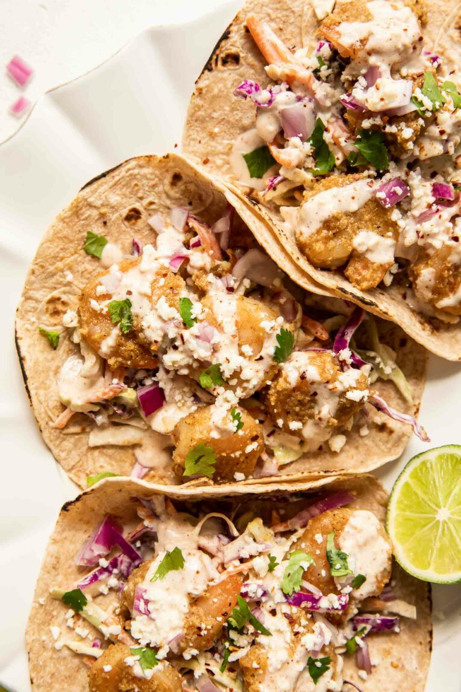

Baja Shrimp Tacos

Description
This delicious recipe is a fusion of tropical flavor and mexicana cuisine.
It results in a fantastically fresh dish bursting with flavor.
This dish is easy to make, requiring readily available ingredients found
at any local supermarket, and can be ready within an hour. A favorite at parties,
family gatherings, or even a simple night with the family.
Ingredients
- Almond Flour
- Shrimp Seasoning
- Plain Greek Yogurt
- Vinegar
- Lime Juice
- Honey
- Sauce Seasoning
- Shredded Cabbage and Carrots
- Corn Tortillas
- Taco Toppings
Steps
Prepare the Shrimp
- Prepare the shrimp and pat them dry.
- Mix the ancho chili powder, cumin, salt, pepper, and almond
flour together in a large mixing bowl.
- Add the shrimp in and mix to coat evenly and set aside.
Prepare the Sauce
- Mix the yogurt, vinegar, lime juice, honey, smoked paprika, garlic, chili powder, and salt together.
- Set aside.
Prepare the Slaw
- Mix the green cabbage, red cabbage, and carrots.
- Add in about 3/4 of the sauce and mix to coat evenly.
- Set aside.
Cook the Shrimp
- Heat the avocado oil in a sauté pan or skillet over medium heat.
- Cook the shrimp in the oil for about 5-7 minutes, or until the seasoning coating begins to brown and the shrimp are evenly warm.
Make the Baja Shrimp Tacos
- While the shrimp are cooking, heat the tortillas on a separate burner.
- ayer each tortilla with the slaw mixture, Baja shrimp, chopped red onion, cotija cheese, a drizzle of extra sauce, and chopped cilantro.
- Enjoy